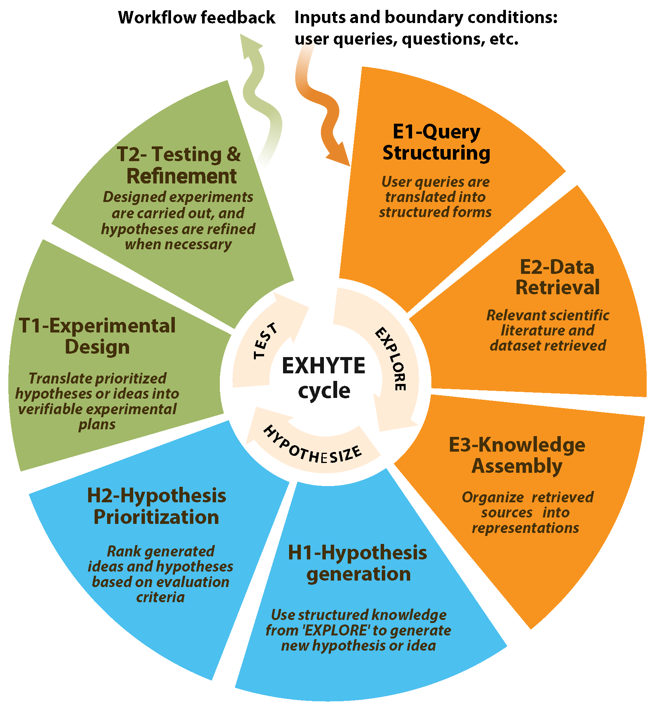

This survey uses EXHYTE as a workflow abstraction for organizing and comparing AI-for-science systems (Fig. 1). We derived its stages through a comparative analysis of recent LLM- and agent-based research systems, in which a recurring operational structure appears across domains: scientific knowledge or data are first retrieved, organized, or analyzed; candidate hypotheses, ideas, designs, or interventions are then generated; and these candidates are subsequently evaluated through computational, experimental, or expert-mediated testing. EXHYTE formalizes this observed design pattern as a review framework for mapping system capabilities, not as a comprehensive account of scientific method.
This distinction matters. Scientific inquiry also involves problem formulation, theoretical framing, anomaly recognition, conceptual change, instrument development, social validation, and judgments about which questions are worth pursuing. Many of these activities are only partially represented in current AI-for-science systems, and several remain dependent on human researchers. EXHYTE should therefore be read as an empirical abstraction of the systems surveyed here, not as a claim that all discovery reduces to an explore-hypothesize-test sequence.
Research typically enters the EXHYTE workflow through an input or boundary condition: an open question, an unexpected observation, an anomaly in data, a new measurement technology, a dataset, a paper collection, or a user-specified research goal. We treat these inputs as boundary conditions because most existing systems still rely

on human researchers to define the initial problem space, select contextual materials, specify constraints, and judge whether a question is worth pursuing. This boundary does not make problem formulation trivial; rather, it identifies automated support for problem formulation, anomaly recognition, and research-priority assessment as important open challenges for AI-assisted discovery.
Once an input has been specified, the first stage, EXPLORE, organizes what is known and exposes what remains uncertain. It assembles and structures knowledge so that gaps, unresolved questions, empirical patterns, or candidate search spaces become explicit and actionable. This stage consists of three substages:
E1: Query structuring translates research questions, goals, or inputs into machine-actionable forms, such as key phrases, controlled vocabularies, domain schemas, or decomposed sub-queries, to guide retrieval and analysis.
E2: Data retrieval collects literature, code, structured datasets, molecular or materials records, and other scientific resources from repositories, databases, and APIs according to the structured query plan from E1.
E3: Knowledge assembly normalizes and integrates retrieved information into representations such as embeddings, graphs, feature tables, structured summaries, or curated databases, surfacing gaps, patterns, or candidate directions.
The output of EXPLORE is a structured knowledge base, set of retrieved resources, or empirical representation that supports downstream generation of candidate hypotheses, ideas, or designs.
HYPOTHESIZE transforms knowledge gaps, empirical patterns, or design opportunities into candidate ideas or specific claims. It includes two substages:
H1: Hypothesis/idea generation formulates candidate mechanisms, explanations, designs, or interventions through approaches such as literature-grounded reasoning, multi-agent synthesis, knowledge-graph reasoning, or data-driven pattern discovery.
H2: Hypothesis/idea prioritization evaluates these candidates for properties such as novelty, plausibility, feasibility, expected impact, testability, or alignment with domain constraints, using LLM-based evaluation, literature-based assessment, quantitative domain metrics, or expert review.
The outcome of HYPOTHESIZE is a ranked or filtered set of candidate hypotheses, ideas, or designs with rationales, evidence links, and, when available, success criteria for evaluation.
TEST translates selected candidates into executable evaluations and produces evidence that informs subsequent workflow steps. It includes two substages:
T1: Experimental design specifies objectives, protocols, datasets, materials, computational workflows, and measurable outcomes, yielding executable experimental or computational plans.
T2: Testing and refinement performs in silico, in vitro, in vivo, or expert-mediated evaluation and analyzes the results to assess, revise, or reject candidate hypotheses, ideas, or designs.
The output of TEST may include quantitative results, experimental observations, expert assessments, error analyses, updated evidence records, or revised candidate descriptions. In a workflow setting, these outputs can update the assembled knowledge base, refine candidate hypotheses or designs, adjust evaluation protocols, or identify additional information needed for subsequent analysis. Feedback in EXHYTE should thus be understood as a practical mechanism for linking evaluation results back to earlier workflow components, not as a philosophical claim that evidence mechanically confirms or falsifies hypotheses.
Taken together, the three stages provide a structured vocabulary for analyzing the current AI-for-science literature. EXHYTE lets us ask where existing systems concentrate their capabilities, which substages remain underdeveloped, how components connect across the workflow, and where human oversight remains necessary for problem choice, evidence interpretation, risk assessment, and scientific value judgment. In this sense, EXHYTE functions as both a review framework and a design map for AI-assisted discovery workflows.